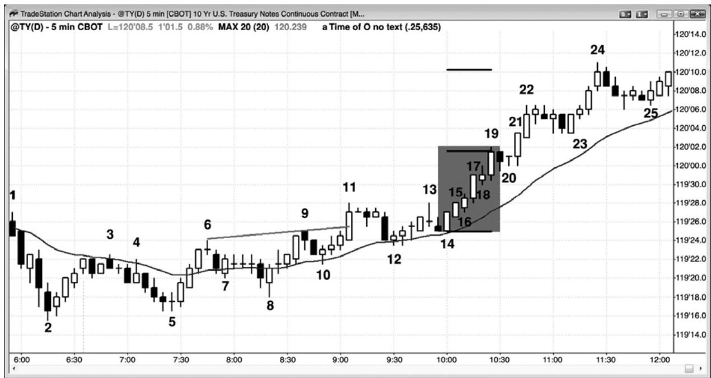
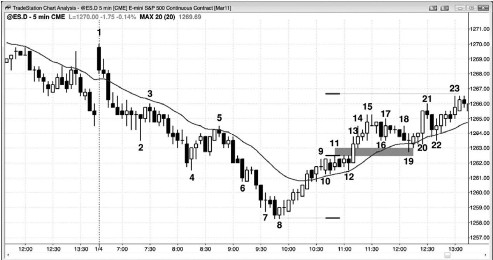

第1章 突破交易范例¶
第 1 章 突破交易范例
很多新手发现很难在突破时交易，因为市场运动的速度很快，需要快速地制定决策，而且常常拥有大型棒线，也就是说风险更高，交易者们不得不降低头寸规模。但是，如果交易者学会如何识别很可能成功的突破，那么所获得的交易者方程可能非常强。

当 对 一 张 图 表 的 讨 论 内 容 有 多 页 时 ， 记 着 你 可 以 去 威 利 的 网 站（www.wiley.com/go/gradingranges）观看图表或者把它们打印出来，这样你就可以一边看图，一边阅读对图表的说明，而不用反复翻书查看图表。
成功的突破，比如图 1.1 中的多头突破，拥有极高的胜率，但是在情绪上可能很难交易。突破迅速出现，交易者们本能地知道风险是跌至尖峰的底部（他们把保护性止损设在多头尖峰的最低点的下方 1 个跳动处，比如设在棒 14 下方 1 个跳动处），那常常超出他们正常的风险容限。他们希望出现回撤，但是知道在市场到达更高价位前很可能不会出现回撤；他们也害怕以市价买进，因为他们正在一个尖峰的顶部买进。如果市场在下个跳动反转，他们将在一个尖峰的顶部买进，他们的保护性止损将非常远。但是，他们经常未能意识到的是，胜算是在他们一方。一旦像这样的突破中出现一个强尖峰，那么出现一波测量运动的几率至少为60%，有时甚至可能达到 80%，测量运动的幅度约等于尖峰高度。这就意味着他们至少有 60%的机会赚到至少与初始风险同样多的点数，如果他们入场后尖峰继续增长，那么他们的风险保持不变，但是测量运动目标却是越来越高。举例说明，在图 1.1 美国 10 年期国库券的 5 分钟图上，如果交易者们在棒 15 的收盘价买进，那么他们的风险是跌至那个双棒尖峰的底部下方 1 个跳动（1 点的 1/64），即棒 14 低点下方 1 个跳动，或者说比入场价位低 7 个跳动。在这一点，由于交易者们认为市场是总在场内多头市场，所以他们认为在几棒之内市场至少有60%的几率会上涨。他们还应假定至少出现一波向上的测量运动。由于那个尖峰的高度为 6 个跳动，所以市场至少有 60%的几率至少上涨 6 个跳动，然后再跌向他们的保护性止损。
在棒 19 的收盘价，尖峰高度已经达到 17 个跳动，由于它仍然是一个突破尖峰，所以仍然至少有 60%的几率至少再出现一波向上的测量运动。如果交易者们在这一点平仓，那么他们可能会以市价买进较小的头寸，所冒风险为跌至尖峰底部棒 14 下方 1 个跳动，或者说 18个跳动，利润目标为 16 个跳动（如果市场再上涨 17 个跳动，他们可能以 16 个跳动的利润离场）。在棒 15 收盘价买进的交易者们仍然冒着跌至棒 14 低点下方的 7 个跳动的风险，但是现在有 60%的几率市场会超越棒 19 高点 17 个跳动，那将是大约 28 个跳动的利润（14/23 点）。那个尖峰在棒19结束，下一棒是一条空头内包棒，而不再是强多头趋势棒。这是多头趋势通道期内一系列回撤中的第一个。大约 1 小时之后，棒 24 向上超越测量运动目标，市场涨得更高了。
P43
实际上，大部分交易者会随着尖峰增长而调紧止损，所以他们所冒的风险比较刚才讨论的要低。在棒 15 收盘价买进的很多交易者，可能在棒 17 刚刚收盘就把止损向上调至它的下方，因为他们不希望市场跌至这样一条大阳线下方。如果真的跌至它的下方，那么他们将认为之前的判断是错误的，他们不希望冒更大的风险。当棒 19 收盘后，交易者们看到它是一条大阳线，很多交易者可能会把保护性止损设在由棒 17 突破产生的微型测量缺口内。棒 18 低点高于棒 16 高点，这个缺口是趋势强劲的征兆。交易者希望市场继续上涨，而不是跌至棒18 下方，进入缺口，于是有些交易者把他们的止损跟踪调整至棒 18 的低点下方。很多老手利用尖峰来推进他们的交易。当尖峰继续向上增长时，他们不断增加多头仓位，因为他们知道那个尖峰拥有非常有利的交易者方程，而且很棒的机会将是短暂的。当市场向交易者提供具有强交易者方程的交易时，他需要积极一点。当市场不提供具有强交易者方程的交易时，他还需要少交易或根本不交易，比如在紧凑的交易区间中。
对于大多数交易者来说，从棒 5 开始的那个多头上涨尖峰使市场翻转为总在场内多头状态。当市场向上超越棒11楔形空头旗形高点时，很可能会出现一波向上的近似测量运动。棒15 是第二条连续的大阳线，在很多交易者心目中，它确认了之前的突破。棒 14 和 15 都是强多头趋势棒，拥有不错的实体，没有明显的尾线。从棒 5 低点开始的上涨运动拥有不错的买压，形成很多强多头趋势棒，棒线之间很少重叠，只有几条空头趋势棒，没有连续的强空头趋势棒。市场可能已经处于一轮多头趋势的早期阶段，聪明的交易者们正在寻找一个多头突破。一旦棒 14 和 15 突破而出，他们就迫切希望做多，在市场截止棒 19 高点的上涨过程中，交易者们分批持续买进。
交易者必须强迫自己去做的最重要的事情，也是通常比较难以做到的事情，就是一旦认为当前是一个可靠的突破尖峰，那么就必须至少建立一个小型头寸。当他们感觉自己正希望出现回撤，但是又害怕回撤在很多棒之内不会出现时，他们应该假定那个突破很强。他们必须决定最坏情况下的保护性止损要设在哪里，那通常相对较远，然后把它作为止损。因为止损幅度比较大，所以在入场较迟的情况下，他们的初始头寸应该小一些。一旦市场向他们的方向运动，他们就可以调紧自己的止损，他们可以准备加仓，但是永远不应超过他们正常的风险水平。当每个人都希望出现回撤时，短时间内回撤通常不会出现。这是因为每个人都认为市场不久会涨得更高，但是他们不必认为它将在不久的某个时间跌到更低。聪明的交易者们知道这一点，因此他们开始分批买进。由于他们不得不冒着跌至尖峰底部的风险，所以他们买的规模很小。如果他们的风险是平常的三倍，那么他们就仅买进平常规模的三分之一，以便使总的资金风险保持在正常范围内。当强势多头不断分小批买进时，这种买压便阻止了回撤的形成。强势空头看到趋势，他们也相信市场不久将涨得更高。由于他们认为市场不久将涨得更高，所以他们将停止做空。如果他们认为自己在几棒后便能以更好的价格做空，那么现在做空是讲不通的。所以强势空头不再做空，强势多头仍然分小批买进，以防短时间内不会出现回撤。
结果是什么呢？市场不断上涨。由于你需要做聪明交易者正在做的事情，所以你需要至少在市价或一两个跳动的回撤处买进一个小型头寸，所冒风险是跌至尖峰的底部。即使回撤在下个跳动开始，市场也很可能不会跌得太深，因为聪明交易者将把那个回撤看作是一个机会而积极买进。记住，每个人都等待在回撤买进，所以当回撤最终到来时，幅度只会非常小，而且不会持久。原来等待买进的所有交易者将把它看作他们想要的机会。结果是你的头寸很快便再次成为赚钱的头寸。一旦市场上涨得足够高，你就可以准备部分获利了结，或者你可以准备在回撤时买进更多，那可能是在你的初始入场点之上。重点是一旦你决定在回撤买进是一个很棒的想法，那么就应该去做强势多头正在做的事情，至少以市价买进一个小型头寸。
有的交易者喜欢在市场向上突破前一波段高点时买进，使用止损单在原来高点上方 1 个跳动处入场。总的来说，在回撤入场的回报是比较大的，风险是比较小的，而且胜算较高。如果交易者们利用这些突破买进，那么他们通常需要持有头寸经历一个回撤，然后才可获得较大利润。通常，在回撤买进比在突破买进要好。举例说明，与其在市场上涨至棒 9 的过程中在棒 6 上方买进，不如在棒 10 回撤上方买进，因为交易者方程可能更强一些。
同样地，当棒 11 向上超越棒 9 时也是如此。对于每一个突破，交易者们不得不决定它是会成功还是会失败。如果他们认为突破会成功，那么他们就准备在突破棒或坚持到底棒收盘后买进，在前一棒低点或低点下方买进，在前一棒高点上方买进。如果他们认为突破会失败，那么他们不会买进，如果他们持有多头，那么他们会离场。如果他们认为突破失败后市场的下跌足以做一笔刮头皮交易，那么他们可能会做空，预期获得刮头皮的利润。如果他们认为突破失败将引起趋势反转，那么他们可能准备做一笔空头波段交易。在这个特定的例子中，当市场向上强势超越棒 9 和棒 11 形成的双重顶时，在突破买进是合理的，但是在棒 15 收盘买进的交易者们入场价大致相同，而且拥有更加充分的交易理由（在强多头尖峰中一条强多头趋势棒的收盘买进）。
P44
如果任意多头趋势或突破，看起来没有强到可以在尖峰的顶部附近买进，比如在最后一棒的收盘，那么等待在回撤买进，交易者方程要更强一些。棒 22 是从一个 ii 形态突破而出的第二棒，所以可能是一个最终旗形反转架构的起点。这很可能是一个微型买进高潮（将在第三本书中关于高潮反转的一章中讨论）。在这一点，在回撤买进要比在棒 22 收盘买进获得更强的交易者方程。同样地，对于棒 24 也是如此。当趋势中出现更多双向交易时，最好准备在回撤买进。一旦双向交易变得足够强，先前的回撤幅度已经较深，持续时间超过 5 棒，那么交易者们就可以开始做空头刮头皮交易，比如在棒 24 处的双棒反转（在后面那条空头棒的低点下方做空）。当市场已经转变进入交易区间后，空方将开始做空头波段交易，预期出现更深的回撤和可能的趋势反转。
这轮多头趋势中的其他突破回撤买进架构包括：棒 8 高点 2 多头旗形（一个从截止棒 6的上涨开始的回撤，截止棒 6 的上涨突破了从棒 3 到棒 5 的空头通道），均线处的棒 12 高点2（棒 11 向上突破交易区间和棒 10 高点 1 多头旗形；第一次下推是棒 11 后面第二棒，一条空头棒），棒 14 外包上涨棒（交易者们可能会在它向上形成外包时买进，但是如果他们在棒14上方买进，那么胜算将更高，因为那是一条多头趋势棒），棒20 ii形态，棒23处的高点2（棒 23 是入场棒），以及棒 25 高点 2（所有双重底都是高点 2 形态）。当信号棒拥有多头实体时，它更为可靠。
总的来说，在一轮刚刚变为很强的总在场内多头状态的趋势中，每当第一个回撤出现时，交易者应该立即设定买进止损单在尖峰的高点上方买进。这是因为很多交易者害怕在前一棒低点下方或高点 1 上方买进，因为他们认为市场可能出现两条腿回撤。但是，如果他们等待两条腿回撤，那么他们将错过很多非常强的趋势。为了防止自己被套出强趋势，交易者们需要养成设定“破釜沉舟”买进止损订单的习惯。如果他们在高点 1 买进，他们可以取消自己的买进止损单。但是，如果他们错过早期的入场，那么他们至少要进入趋势，那是他们需要做的。截止棒 19，趋势明显非常强劲，很可能继续上涨一波测量运动，上涨幅度就是尖峰的高度。市场一出现可能回撤的征兆，交易者们就需要把最坏情况买进止损单设在尖峰的高点上方。棒 19 的后一棒是一条空头趋势棒，可能是一个回撤的起点。他们需要把买进止损单设在棒 19 高点上方 1 个跳动处，以防趋势迅速恢复。相反地，如果他们在棒 20 ii 高点 1 架构买进，那么他们将取消棒 19 上方的买进止损单。但是，如果他们因某种原因未能在高点 1 买进，那么当市场运动至新高时，他们至少要保证进入趋势。他们的初始保护性止损将设在最近的微型回撤下方，即在棒 20 低点下方。
棒 24 是一个双棒多头尖峰，是第三个没有回调的连续买进高潮。当天剩余时间不足以形成 10 棒、两条腿调整，所以没有多少空头愿意做空，特别地，从棒 5 和 12 开始的上涨运动中只有非常少的卖压。但是，有些多头把它作为一个获利的机会，结果表明那是一种合理的
交易者们知道大多数令趋势反转的尝试失败，所以很多交易者喜欢在与那种尝试相反的方向上交易。棒 12 的前一棒是一条大阴线，它向下突破趋势线，是尝试令棒 11 多头突破向下反转。多方在那条空头趋势棒收盘后买进，预期市场会返回它的高点，可能形成一波幅度等于那一棒高度的上涨测量运动。一旦他们看到棒 12 形成一个多头收盘，他们就在棒 12 收盘价和它的高点上方买进。成功的空头突破之后通常是另一条空头趋势棒，至少是一个十字星，相反地，如果是一条多头棒，甚至是一条很短的多头棒，那么突破尝试失败的几率就变得更高，特别地，如果那一棒位于多头趋势中的均线处，那么失败的几率还要增加。空方希望空头尖峰之后出现一条空头通道，或者某种其他类型的空头趋势，但是多方把那个空头尖峰看作是在短暂的打折期间买进的机会。空头尖峰，特别是日线图上的空头尖峰，可能是由新闻事件引起的，但是大部分都不会坚持到底，更长期的看涨基本面胜出，引起一个失败的空头突破和多头趋势的恢复。空方因恐怖的新闻而变得兴奋和充满希望，但新闻通常只是为期一天的小事件，与所有基本面因素的总和相比，它是微不足道的。
图 1.2 突破回撤

P45
图 1.2 显示出，当多头波段出现向上突破时，市场通常会回测突破缺口。市场跌至棒 8，然后向上反转。棒 12 是一个二次入场均线缺口棒空头架构，但是失败了。市场非但没有测试突破低点，而是在棒 13 向上突破。突破棒之后的那一棒的低点，与棒 11 突破点的高点，形成一个突破缺口。截止棒 11 的第一条上涨腿的高点或中点（谁的中点），可能引起一波向上的测量运动。在棒 13 上涨尖峰之后，出现一条紧凑的四棒通道，结束于棒 15，然后向下测试通道底部。棒 19 测试还进入了突破缺口，在这种情况下常常会出现此类测试。
从棒 5 到棒 8 的抛盘没有回撤，棒 8 的后一棒是超越前一棒高点的第一棒。当强趋势中的第一个回撤通常失败时，老手们为什么一直会买回他们高度获利的空头头寸呢？因为他们已经认识到，自己应该一直寻找部分或全部获利的理由，特别是当利润较大时，因为那些利润可能快速消失，尤其是在一波可能的抛售高潮之后。这里，出现了三波连续的抛售高潮（截止棒 6、7 和 8 的下跌），而且棒 7 后面的内包棒是一个潜在的最终旗形（这些形态将在第三本书中讨论）。市场向上调整约 10 棒的可能性非常高，可能运动至均线、棒 4 低点、甚至是棒5高点。空方把这看作是在棒8附近锁定自己利润的大好机会，预期至少出现10棒的反弹，如果在更高价位形成卖出架构，那么他们将准备再次做空。上涨运动非常强劲，没有形成卖出形态，空方高兴地看到自己非常明智地获利了结，他们不再关心没有出现很好的做空机会。如果他们仍然持有空头的话，那么他们的利润就转变为亏损了。获利了结是任意强趋势中第一个回撤的起因。错过下跌运动的空方正希望出现一个回撤，以便让他们做空，但是他们一直未能获得那种机会。
错过截止棒 4 抛盘的空头，或者在棒 4 获利了结、正准备在回撤再次卖空的空头，在均线处的棒5低点2看到了机会。它有一个空头实体，而且还是一个20缺口棒空头架构（将在本书的后面讨论）。